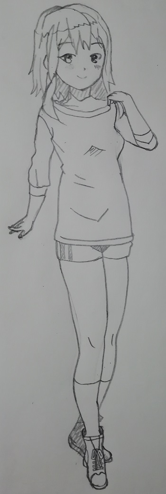
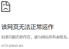

涂鸦室

工作日志
Q:为什么gif图放一段时间不动了，本地文件也不动了，重新更新了一次。
Q:背景图片的显示
A:使用绝对路径,以及background属性。
Q:PHP_EOL和"\n"为何实际运行不换行？而"<br>"可以。
A:有换行的属性，但是页面是html所以没有换行。
Q:服务器如果远程下载GitHub的内容，会生成一个git文件，那如何自动部署呢？
A:自动部署指的不是远程下载，而是在服务器安装git后，与github进行密钥配对，再用钩子进行连接就好了。
Q:异步提交是啥?当前页面提交怎么办到?
Q:warning:本地提交表单时出现的错误：（服务器里可以正确提交），如何解决？
php环境没有弄对，或者文件(项目)没有放在www目录下。
Q:咱的图片加载不出来啊！！！提交到服务器可以，那在本地呢？
A:使用链接进行显示。
Q:如何用相对路径显示照片呢？
A:有"../"是父系路径
A:有"./"或者"不写"就是相对路径
A:有"/"是绝对路径
前端的绝对路径相对于服务器的根目录
后端的绝对路径相对于盘符根目录。
借鉴这位大佬
实例
表单,例子如下：
How about YZH?
He's a cool boy.
He's very cool.
他帅的一批。
一些注意点
复选框的选项支持全局设置。比如我设置的字体,它还活着。
CSS优先级顺序：近的高。
li,h自带换行。
一个汉字占三个字符位置。
div根据自身模块大小进行变动，一个是水平变动，一个是垂直变动。
transform:translate(-50%,0);
（还不太懂，不敢乱用）
hexo博客部署命令：hexo clean,hexo generate,hexo depoly.前两个加hexo server是本地运行博客。
text-decoration 文本装饰，可用于去除下划线。
（学这个跟学英语一样）